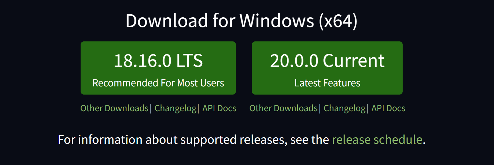
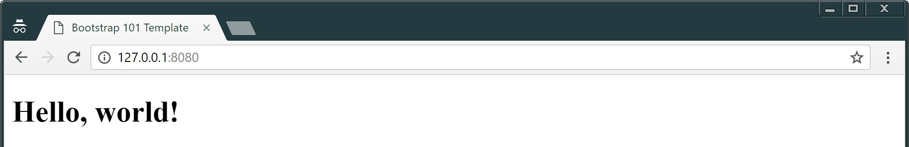

class: center, middle # Course Setup --- ## Summary .breadcrumbs[<a href="#1">Course Setup</a>] We will see what we need to install and setup for this course. This material is part of the [Advanced Front-end Development](https://github.com/MediaComem/comem-masrad-dfa) for the [Master of Advances Studies in Rapid Application Development](https://www.he-arc.ch/ingenierie/mas-rad-cas-dar). **You will need** - [Google Chrome][chrome] (recommended, any browser with developer tools will do) - [Visual Studio Code][vscode] (recommended, although any editor could do) **Recommended reading** - [Command Line][cli] --- class: center, middle, image-header ## Node.js .breadcrumbs[<a href="#1">Course Setup</a>] <p class='center'><img src='images/node-js-logo.png' width='40%' /></p> Node.js is a JavaScript engine that you can install on your machine to execute JavaScript programs without using a browser. It's primarily used to develop both backend web applications and tools. During this course, we won't use it directly, but we will use tools that need Node.js to run. --- ### Install Node.js .breadcrumbs[<a href="#1">Course Setup</a> > <a href="#3">Node.js</a>] To install Node.js, go to the [official website][node-dl] and download the installer for the latest **LTS** version for your system, then **launch it**. <p class='shadow center'></p> > If you want more information about Node.js, see [here][node-js]. --- ### Check .breadcrumbs[<a href="#1">Course Setup</a> > <a href="#3">Node.js</a>] When you completed the installation, you can check that everything ran correctly by launching a **Terminal**. In this terminal, type the following command: ```bash $> node --version ``` > You should see in return the version number of your node installation (should be `v12.16.1` or above) --- ### NPM .breadcrumbs[<a href="#1">Course Setup</a> > <a href="#3">Node.js</a>] Tools and other useful utilities that require Node.js to run are bundled into **packages for Node.js** that other developers can install on their machine. To manage those packages, every Node.js installation comes with **a dedicated tool** called `npm`, which stands for **N**ode **P**ackages **M**anager. Every package that can be installed on your machine is available through the **npm repository**, which you can browse thanks to its [own officiel website][npmjs]. > If you want more information about `npm`, see [here][npm] For now, we will install one of those useful tools, called `live-server`. > Later on, we will use `npm` to install many more packages, and you probably will too for your final project --- ## Install `live-server` .breadcrumbs[<a href="#1">Course Setup</a>] > We'll see later what this tool does. Open your **Terminal** (if you closed it before), and type the following command: ```bash $> npm install -g live-server ``` > `npm install` allows you to install one or more packages on your system. You should see some activity in your screen, meaning that the package is being installed. --- ### Check .breadcrumbs[<a href="#1">Course Setup</a> > <a href="#7">Install `live-server`</a>] When the installation is complete and the screen stand still, you can **check** that the installation went OK by just typing: ```bash $> live-server ``` Your browser should open a page at `127.0.0.1:8080`. That page should return an error: **this is expected**. --- ## Create project directory .breadcrumbs[<a href="#1">Course Setup</a>] A **project directory** is simply a directory where all files for a specific web site or web application are stored. You will need a project directory for both **this course** and **the project** you'll have to deliver at the end. Right now, create an empty directory called `dfa-course` somewhere on your filesystem. > This `dfa-course` project folder is where we will put most of the examples and exercices that we will see in the course. > > Right now, it's completely empty. > > **Whenever we refer to** "your project" **in the slides, we are talking about this `dfa-course` directory**. --- ### Create `index.html` .breadcrumbs[<a href="#1">Course Setup</a> > <a href="#9">Create project directory</a>] Most (_if not all_) web project directories have an `index.html` file endpoint: - In WebSite, this is the **landing page**. - In WebApplication, this is the **page that loads the app**. <hr> For this `dfa-course`, we **provide** you with the **content** of your `index.html` page. Go to [this page][index-gist], and **save it** at the root of your project directory, under the name `index.html`. > Hit `Ctrl + S` while on the page to save it on your file system, or select all the text and copy-paste it on an empty new file. --- ## Access your project .breadcrumbs[<a href="#1">Course Setup</a>] Now that your project has an `index.html` file, we can see what `live-server` is all about. Open a terminal, and go to the root of your project directory: ```bash $> cd path/to/your/project ``` Then, type the command `live-server`, which starts the tool: ```bash $> live-server ``` Like the last time, your browser should open a new tab at `127.0.0.1:8080`. But this time, you should see this: <p class='shadow'></p> --- ### What does `live-server` do .breadcrumbs[<a href="#1">Course Setup</a> > <a href="#11">Access your project</a>] `live-server` is two things. <hr> **It's a simple Local Web Server.** That means it can serve files contained in a directory, here the `index.html` file in your `dfa-course` directory, **as if they were provided through a distant server**. > `live-server` expects an `index.html` file at the root of the directory. If it does not find one, it will display the content of the diretory. <hr> **It has Live-Reload.** With Live-Reload, `live-server` is able to activly watch **all files** in the directory it's currently serving. Whenever a **save** is detected **on one of these files**, it automatically **reloads the tab** to reflect those changes. > For `live-server` to detect the changes, you **have to save the file**. --- #### Let's see... .breadcrumbs[<a href="#1">Course Setup</a> > <a href="#11">Access your project</a> > <a href="#12">What does `live-server` do</a>] > With `live-server` started and your project directory opened in your broswer... Open `index.html` in your text editor (_if you closed it before_), and change this line... ```html ... <h1>Hello, world!</h1> ... ``` ...to this line: ```html ... <h1>Hello, Yverdon!</h1> ... ``` **Save** the file and **go back to the tab in your browser** to see that the changes have been detected and **applied**. **Revert** the line to its previous state, **save again** and see how magically the web page has changed. --- ## (Optional) VS Code Live Share .breadcrumbs[<a href="#1">Course Setup</a>] For those of you who are using or will use VS Code (which I personally recommand), I advise you to install at least the Live Share plugins expansion pack. Live Share is a pack of additional plugins for VS Code that allow **a user to start a collaborating session** from VS Code, invite others to **collaborate with him in real-time** (very much like Google Docs does), and share local resources across the network. It also provides **textual and voiced chat** for people in the same sharing session. Considering the current Covid-19 situation, those Live Share features might come handy for **advanced distant support** later in the course (and espacially during the project). To install Live Share, first install [VS Code][vscode], then [the dedicated Expansion Pack][live-share-pack]. > Note that you can [join a session event without VS Code][browser-live-share] (but not start one). --- ## Resources .breadcrumbs[<a href="#1">Course Setup</a>] **Documentation** - [node.js][node-dl] - [npm][npmjs] - [live-server][l-s] - [Live Share][live-share] [browser-live-share]: https://docs.microsoft.com/en-us/visualstudio/liveshare/quickstart/browser-join [chrome]: https://www.google.com/chrome/ [vscode]: https://code.visualstudio.com/ [node-dl]: https://nodejs.org/en/ [cli]: https://mediacomem.github.io/comem-archidep/latest/subjects/cli/?home=https%3A%2F%2Fmediacomem.github.io%2Fcomem-masrad-dfa%2Flatest [live-share]: https://visualstudio.microsoft.com/fr/services/live-share/ [live-share-pack]: https://marketplace.visualstudio.com/items?itemName=MS-vsliveshare.vsliveshare-pack [node-js]: https://mediacomem.github.io/comem-archioweb/latest/subjects/node/?home=https%3A%2F%2Fmediacomem.github.io%2Fcomem-masrad-dfa%2Flatest [npmjs]: https://www.npmjs.com/ [npm]: https://mediacomem.github.io/comem-archioweb/latest/subjects/npm/?home=https%3A%2F%2Fmediacomem.github.io%2Fcomem-masrad-dfa%2Flatest [index-gist]: https://gist.githubusercontent.com/Tazaf/420a368389367a83fcfb96ab3a51bf8a/raw/index.html [l-s]: https://www.npmjs.com/package/live-server